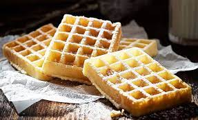

Gauffre

Description
Du Gauffre pour bien commencer la journée
Ingredients
- Oeuf
- Fromage blanc
- Farine
- Lait végétal
- Levure chimique
Etape
- Mélanger tous les ingrédients et laisser la pâte reposer pendant 30min
- Déposer une louche de pâte dans votre appareil à gauffre et laisser cuire selon le temps indiqué par votre appareil